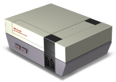
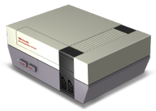
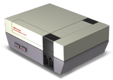

Neil Baldwin's
 


Neil Baldwin's

cajoNES is another drum synth but this time focused more on performance and random generation to create sounds with a super-fast synth engine.
Two versions: cajoNES and cajoNES Deluxe which features support for 8 pattern slots and battery RAM saving.
SUPER MAGIC MUSIC MAKER! It makes music. It makes magic. It makes magic music. It's heart is made of mathematics and unicorns!
Semi-interactive random music generator. With secret visualizers. And a star-field!
PR8 takes everything and turns it on it's head. It's a drum-machine-style synth but is also so much more. Uses 6 'virtual' tracks and the drum 'instruments' are able to use any combination of all of the NES's hardware voices SIMULTANEOUSLY!
Tons of features and 180hz refresh rate for fast pitch sweeps and other effects. And yes, it has Auto Echo too!
Pulsar (rightly) gained the nickname of 'LSDJ for the NES'. I did add my own little twists though. Features a very similar UI to LSDJ so LSDJ users will find it reasonably familiar. Highlights include Auto Echo (of course!), complex Table-based FX, a unique 'multi-voice' table effect, amplitude modulation 'distortion', scaleable 180hz refresh rate for higher fidelity.
NTRQ was my attempt at making a 'proper' computer-style tracker on the NES.
Features include: variable pattern length, software/hardware pitch sweep, smooth pitch slide and vibrato, complex arpeggios, duty modulation, Auto Echo, speed table (groove), software ADSR, delay, detune.
'Nijuu' is a compilable audio/music macro-language that uses ASM6 6502 assembler to output either a NES ROM or a .NSF file of your music. Similar in approach to MML but is actually based very heavily on my original NES audio drivers that I used for game music. Developed much further to include the now infamous Auto-Echo effect and also some random generative features and a tool to convert simple MIDI data to compilable text.
NES image was taken from Ahuri's NES Icon Pack @ Deviantart.